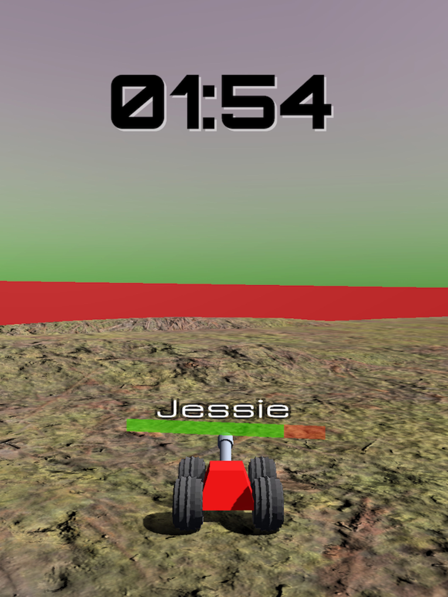

Online Multiplayer Game Using Unity 3D
I have been continuously learning Unity and have created an 3D Online multiplayer tank shooter game. The game is written in C# and is live on itch.io. There are 4 different maps to choose from. The game supports up to 5 players per room and 25 players simultaneously in total.
Play My Game Here
